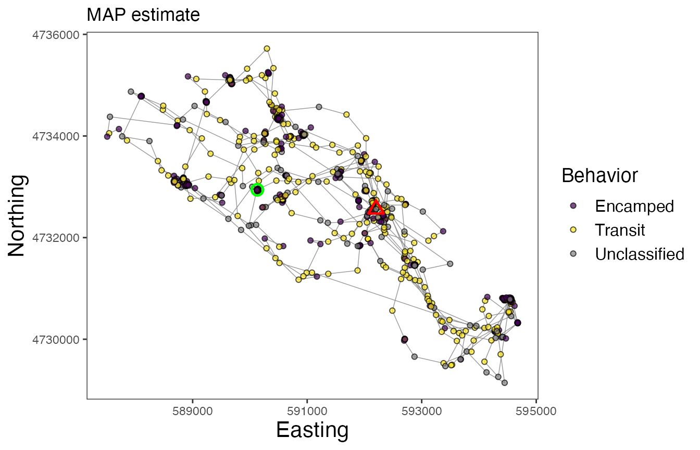
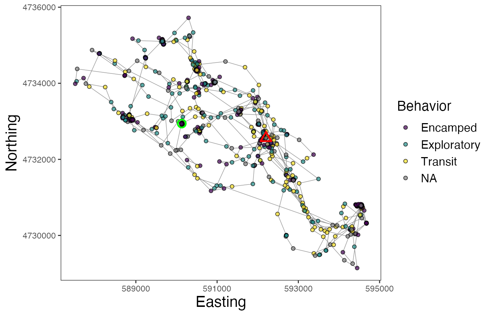

Cluster observations
01 December 2020
Source:vignettes/Cluster-observations.Rmd
Cluster-observations.RmdIntroduction
Alternative to the model that first partitions the tracks into segments and then clusters these segments into behavioral states, observations can be directly clustered into behavioral states using a different model. This (mixture) model also incorporates the non-parametric Bayesian approach that analyzes binned data streams and uses a truncated stick-breaking prior to determine the optimal number of states, but does so in a single stage.
This modeling approach provides results similar to that of state-space and hidden Markov models, but does not assume any Markov property or include a mechanistic process that drives state transitions (e.g., a correlated random walk). This model simply clusters observations together based on the discretized data streams. Therefore, this method provides fast and flexible inference on behavioral states from telemetry data, where individuals are pooled together to make population-level estimates.
Empirical example
This example will demonstrate the steps taken to prepare and analyze an empirical telemetry dataset for a single individual fisher Martes pennanti (leroy) available in the move package (LaPoint et al., 2013) for the estimation of observation-level behavioral states.
library(bayesmove) library(move) library(dplyr) library(ggplot2) library(lubridate) # Load data data(leroy) # Check data structure leroy #> class : Move #> features : 919 #> extent : -73.93067, -73.84366, 42.70898, 42.7687 (xmin, xmax, ymin, ymax) #> crs : +proj=longlat +datum=WGS84 +no_defs #> variables : 17 #> names : timestamp, eobs.battery.voltage, eobs.horizontal.accuracy.estimate, eobs.key.bin.checksum, eobs.speed.accuracy.estimate, eobs.start.timestamp, eobs.status, eobs.temperature, eobs.type.of.fix, eobs.used.time.to.get.fix, ground.speed, heading, height.above.ellipsoid, utm.easting, utm.northing, ... #> min values : 1234354605, 3596, 3.07, 3258904, 0.27, 2009-02-11 12:14:59.000, A, 13, 3, 4, 0.01, 0, -169.6, 587507.837877134, 4729143.16566605, ... #> max values : 1236158219.998, 3666, 97.02, 4291715164, 33.04, 2009-03-04 09:15:01.000, A, 35, 3, 119, 31.71, 359.79, 349, 594679.382402579, 4735720.47868847, ... #> timestamps : 2009-02-11 12:16:45 ... 2009-03-04 09:16:59 Time difference of 21 days (start ... end, duration) #> sensors : gps #> indiv. data : eobs.fix.battery.voltage, manually.marked.outlier, visible, sensor.type, individual.taxon.canonical.name, tag.local.identifier, individual.local.identifier, study.name, study.timezone #> indiv. value: 0 NA true gps Martes pennanti 74 Leroy Urban fisher GPS tracking Eastern Standard Time #> unused rec. : 1071 #> study name : Urban fisher GPS tracking #> date created: 2020-06-24 08:04:52 plot(leroy); lines(leroy)

# Convert from `Move` object to data frame leroy2<- data.frame(leroy) %>% mutate(id = "leroy") %>% rename(date = study.local.timestamp)
Prepare the data
To start off, we are going to calculate step lengths and turning angles from the data, as well as time intervals to determine the primary time step. Additionally, step length and turning angle distributions will be explored to determine how to bin these data streams. Observations will be filtered to only retain those recorded at the primary time step.
# Calculate step lengths (step), turning angles (angle), and time step (dt) leroy2<- prep_data(dat = leroy2, coord.names = c("utm.easting","utm.northing"), id = "id") # View distributions of data streams hist(leroy2$step)

hist(leroy2$angle)

# Which dt is most common? sort(table(leroy2$dt), decreasing = TRUE)[1:20] #15 min (900 s) is primary dt #> #> 901 900 902 896 898 903 907 909 890 904 906 910 892 905 874 894 925 927 865 876 #> 27 24 21 20 20 16 15 15 14 14 14 14 13 13 12 12 12 12 11 11 #Round times w/in 2 min of 15 min interval leroy3<- round_track_time(dat = leroy2, id = "id", int = 900, tol = 120, time.zone = "UTC") sort(table(leroy3$dt), decreasing = TRUE)[1:20] #> #> 900 1828 1773 1802 1831 2710 1705 1708 1728 1739 1741 1748 1756 1759 1762 1777 #> 826 3 2 2 2 2 1 1 1 1 1 1 1 1 1 1 #> 1780 1781 1788 1793 #> 1 1 1 1 # Create list from data frame leroy.list<- df_to_list(dat = leroy3, ind = "id") # Filter observations to keep only those recorded at 15 min (900 s) leroy.filt<- filter_time(dat.list = leroy.list, int = 900) %>% bind_rows
Now, let’s bin step lengths and turning angles for analysis by the mixture model.
# Define bin number and limits for turning angles angle.bin.lims<- seq(from=-pi, to=pi, by=pi/4) #8 bins # Define bin number and limits for step lengths dist.bin.lims<- quantile(leroy.filt$step, c(0,0.25,0.50,0.75,0.90,1), na.rm=T) #5 bins leroy.filt2<- discrete_move_var(leroy.filt, lims = list(dist.bin.lims, angle.bin.lims), varIn = c("step","angle"), varOut = c("SL","TA")) # Only retain id and discretized step length (SL) and turning angle (TA) columns leroy.sub<- subset(leroy.filt2, select = c(id, SL, TA))
Run the model
With the data streams in the correct format, we can now run the model to cluster observations into behavioral states.
set.seed(1) # Define model params alpha=0.1 #prior ngibbs=1000 #number of Gibbs sampler iterations nburn=ngibbs/2 #number of burn-in iterations nmaxclust=7 #number of maximum possible states (clusters) present # Run model dat.res<- cluster_obs(dat=leroy.sub, alpha=alpha, ngibbs=ngibbs, nmaxclust=nmaxclust, nburn=nburn) # Inspect traceplot of log-likelihood plot(dat.res$loglikel, type = "l")

Visualize the results
# Determine the MAP estimate of the posterior MAP.iter<- get_MAP_internal(dat = dat.res$loglikel, nburn = nburn) # Determine the likely number of behavioral states (i.e., what are the fewest states that account for >= 90% of all observations?) theta<- dat.res$theta[MAP.iter,] names(theta)<- 1:length(theta) theta<- sort(theta, decreasing = TRUE) theta %>% cumsum() #first 3 states likely (represent 97.6% of all assigned states) #> 1 2 3 7 5 4 6 #> 0.4654475 0.8016982 0.9760290 0.9886558 0.9942570 0.9972055 1.0000000 # Store cluster order for plotting and behavioral state extraction ord<- as.numeric(names(theta))
It appears that 3 behavioral states are likely based on the estimates from the theta matrix. To confirm that these states represent biologically interpretable movement patterns, we will also inspect the state-dependent distributions for all tested clusters/states.
# Extract bin estimates for each possible state from the `phi` matrix of the model results behav.res<- get_behav_hist(dat = dat.res, nburn = nburn, ngibbs = ngibbs, nmaxclust = nmaxclust, var.names = c("Step Length","Turning Angle"), ord = ord, MAP.iter = MAP.iter) # Plot state-dependent distributions ggplot(behav.res, aes(x = bin, y = prop, fill = as.factor(behav))) + geom_bar(stat = 'identity') + labs(x = "\nBin", y = "Proportion\n") + theme_bw() + theme(axis.title = element_text(size = 16), axis.text.y = element_text(size = 14), axis.text.x.bottom = element_text(size = 12), strip.text = element_text(size = 14), strip.text.x = element_text(face = "bold")) + scale_fill_manual(values = c(viridis::viridis(3), "grey35","grey35", "grey35","grey35"), guide = FALSE) + scale_y_continuous(breaks = c(0.00, 0.50, 1.00)) + scale_x_continuous(breaks = 1:8) + facet_grid(behav ~ var, scales = "free_x")

Based on the resulting distributions, it appears that the first 3 states make biological sense and can potentially be classified as ‘Encamped’, ‘Exploratory’, and ‘Transit’ states. This is because state 1 (Encamped) exhibits low step lengths and high turning angles (near \(\pi\) radians), state 2 (Exploratory) is characterized by a relatively uniform distribution of step lengths and turning angles, and state 3 (Transit) is characterized by large step lengths and low turning angles (near 0 radians). It should be noted that these broad classes of behavioral states likely include a variety of different behaviors that could not be discerned from these telemetry data alone.
Next, we will assign these 3 states to the associated observations. For observations that were assigned to one of the other four states that will not be retained, they will be assigned a value of NA. Similarly, observations that were omitted from the analysis (that were not recorded at a 15 min time step) will also be labeled NA.
Mapping behavioral states estimates
To map the state estimates, we will first need to extract the state assignments associated with the MAP estimate and then re-classify these values to match the modified order from the theta and phi matrices.
# Extract MAP estimate of behavioral states z<- factor(dat.res$z[[MAP.iter]]) levels(z)<- ord # Relabel factor levels leroy.filt2$state<- ifelse(as.character(z) == 1, "Encamped", ifelse(as.character(z) == 2, "Exploratory", ifelse(as.character(z) == 3, "Transit", NA))) # Identify previously filtered observations and merge into final data frame ind<- setdiff(1:nrow(leroy3), leroy.filt2$obs) omit.df<- leroy3[ind,] %>% mutate(obs = ind, time1 = NA, SL = NA, TA = NA, state = NA) leroy.filt3<- rbind(leroy.filt2, omit.df) leroy.filt3<- leroy.filt3[order(leroy.filt3$obs),] # Map behavioral states for Leroy ggplot() + geom_path(data = leroy.filt3, aes(x=x, y=y), color="gray60", size=0.25) + geom_point(data = leroy.filt3, aes(x, y, fill=state), size=1.5, pch=21, alpha=0.7) + geom_point(data = leroy.filt3 %>% group_by(id) %>% slice(which(row_number() == 1)) %>% ungroup(), aes(x, y), color = "green", pch = 21, size = 3, stroke = 1.25) + geom_point(data = leroy.filt3 %>% group_by(id) %>% slice(which(row_number() == n())) %>% ungroup(), aes(x, y), color = "red", pch = 24, size = 3, stroke = 1.25) + scale_fill_viridis_d("Behavior", na.value = "grey50") + labs(x = "Easting", y = "Northing") + theme_bw() + theme(axis.title = element_text(size = 16), strip.text = element_text(size = 14, face = "bold"), panel.grid = element_blank()) + guides(fill = guide_legend(label.theme = element_text(size = 12), title.theme = element_text(size = 14)))

In this map, the green circle represents the first location and the red triangle represents the final location. As with other models that estimate behavioral states, these results can be used for a variety of subsequent analyses, such as to determine behavior-specific habitat suitability (via RSFs/SSFs) or to calculate activity budgets.
References
LaPoint S, Gallery P, Wikelski M, Kays R. (2013). Animal behavior, cost-based corridor models, and real corridors. Landscape Ecology, 28(8), 1615–1630. doi:10.1007/s10980-013-9910-0.
LaPoint S, Gallery P, Wikelski M, Kays R. (2013). Data from: Animal behavior, cost-based corridor models, and real corridors. Movebank Data Repository. doi:10.5441/001/1.2tp2j43g.